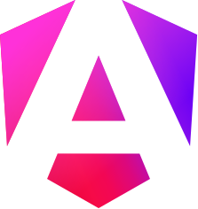
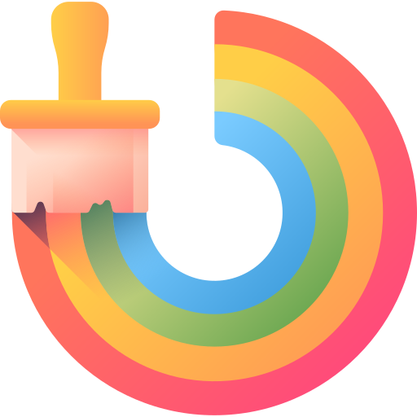
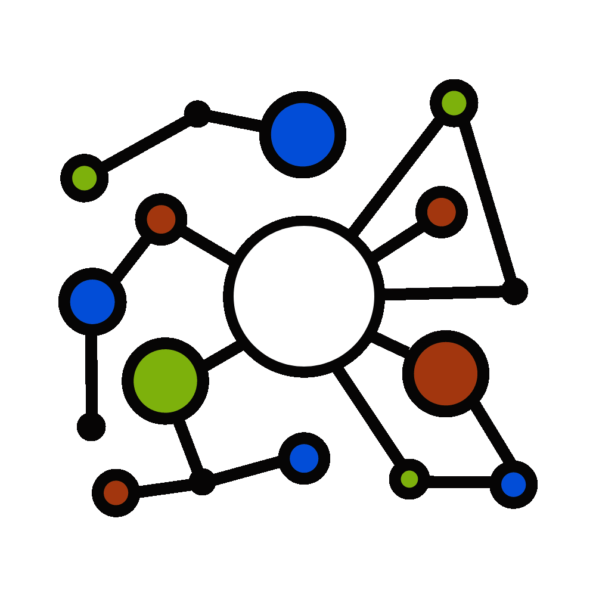

<section class="tech-stack">
    <div class="container">
        <h2>Our Technology Stack</h2>
        <p>We leverage modern technologies to deliver robust and scalable solutions. Here are some of the key tools and
            technologies we use:</p>
        <div class="cards">
            <div class="card angular">
                
                <p class="tip">Angular</p>
                <p class="second-text">Frontend framework for dynamic UI.</p>
            </div>
            <div class="card python">
                
                <p class="tip">Python</p>
                <p class="second-text">Backend services and AI features.</p>
            </div>
            <div class="card sd">
                
                <p class="tip">Stable Diffusion XL</p>
                <p class="second-text">Advanced high-res image generation model.</p>
            </div>
            <div class="card comfy">
                
                <p class="tip">Comfy UI APIs</p>
                <p class="second-text">API's for advanced stable diffusion models pipeline</p>
            </div>
            <div class="card laama">
                
                <p class="tip">Laama</p>
                <p class="second-text">Autoregressive LLM by Meta AI</p>
            </div>
        </div>
    </div>
</section>